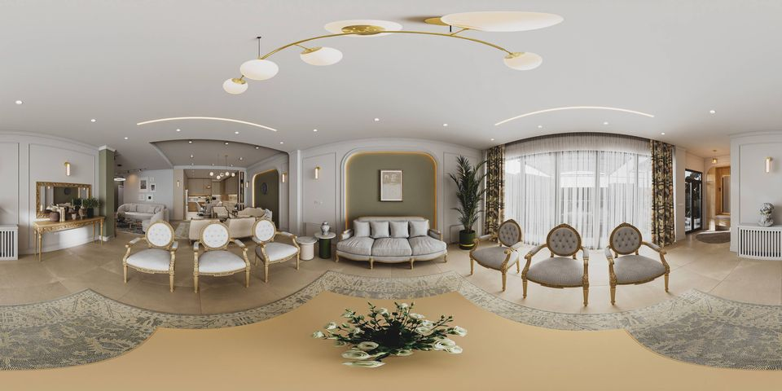

نشیمن نئوکلاسیکmoradi_main1 · Main_1
منبع: kuula.co/post/L8JZk — Mojtaba87
حدس قفلبدترین جهت pz — پنجرههای سوختهٔ پشت کرکرهٔ نازک ← نویز disparity در صفحهٔ پنجره
اندازهگیریمیانگین 16.56 · بدترین 14.71 در pz ✓ تأیید
حفره0.17%
EQLاستراحت EQL-0 · حرکت EQL-3-آزمایشی · پاکت ۰٫۷۵m اندازهگیریشده